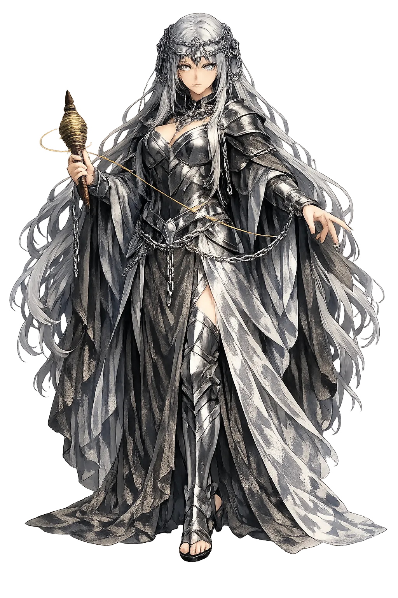
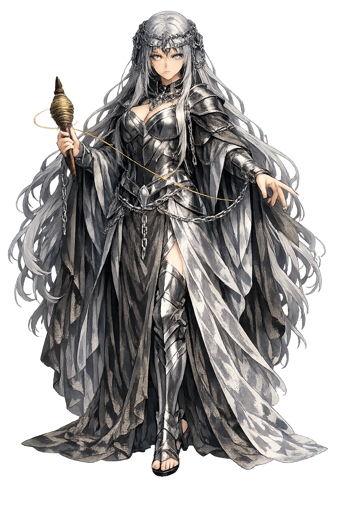

The Authentic Orthography
Necessity, Compulsion · The Necessity that Rules

Unicode restoration and ASCII comparison
Ἀνάγκη
The name in its original Greek form. Anánkē (Ἀνάγκη) is attested in the source tradition — “Necessity, constraint”. Its long vowels and acute accents carry the full phonetic and orthographic weight of the source tradition.
ananke
Reduced to plain ananke, the name loses everything that made it specific: long vowels and acute accents. What remains is an ASCII string that machines can parse but that no longer speaks with its original voice.
Anánkē
The Unicode restoration recovers what ASCII flattened. Anánkē restores long vowels and acute accents, returning the name to its original written dignity. The domain encodes to Punycode, but the browser displays the truth.
Anánkē.com → xn--annk-6na61a.com
The non-ASCII characters in Anánkē are encoded while the ASCII remains visible. To the DNS, it is Punycode. To humanity, it is Anánkē.
How Anánkē is preserved in writing
A bespoke provenance study for Anánkē is being prepared by the PUNICODEX scholarly team.
Contribute scholarly provenance →Owned, ideal, and ASCII forms of Anánkē
Anánkē
Restores Ἀνάγκη. The live temple domain — anánkē.com.
ananke
Flattens Ἀνάγκη. The plain ASCII fallback — what DNS and legacy systems see.
How Anánkē was spoken
Fate, Compulsion, Cosmic Order
Anánkē is necessity personified, the force that binds gods and mortals to what must be. She is not cruel but implacable: the cosmic law that even Zeus cannot overturn, though he directs its fulfillment.
Even Zeus is subject to Anánkē; she is the limit of divine freedom.
In Plato's myth of Er, she turns the spindle of the universe with the Fates.
In the Orphic Rhapsodies Chronos is born of Hydros and Gē, and Anánkē entwines him — she is of the same nature as Adrasteia.
The principle that what is necessary cannot be avoided by prayer or power.
Stories of Anánkē
Anánkē is not a narrative goddess but a cosmic principle. Her 'myths' are philosophical accounts of how the universe is ordered by what cannot be otherwise.
In the Orphic Rhapsodies, Chronos (Time) is born of Hydros and Gē, and Anánkē entwines him like a serpent — being of the same nature as Adrasteia (Inevitable Justice). Together they wrap the cosmos, establishing the boundless bounds of fate.
Greek tragedy repeatedly invokes anánkē as the force that drives characters to deeds they would avoid if they could. Oedipus, Agamemnon, and Prometheus all contend with necessities they did not choose but cannot escape.
Anánkē is the hardest god to love because she does not negotiate. She is the answer to every 'why must this be?' — because it must. Yet there is also dignity in her. To accept necessity is to stop wasting energy on impossibility and to turn toward what can be done.
Enter Extended Lore